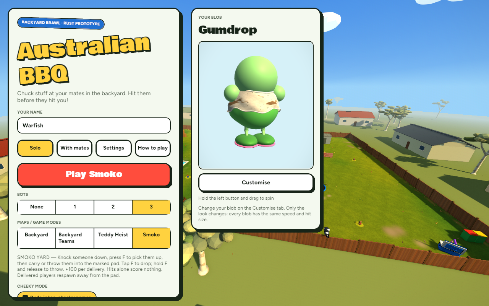
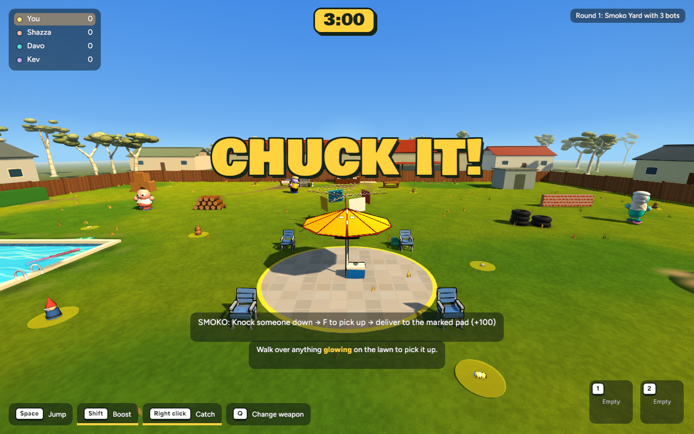
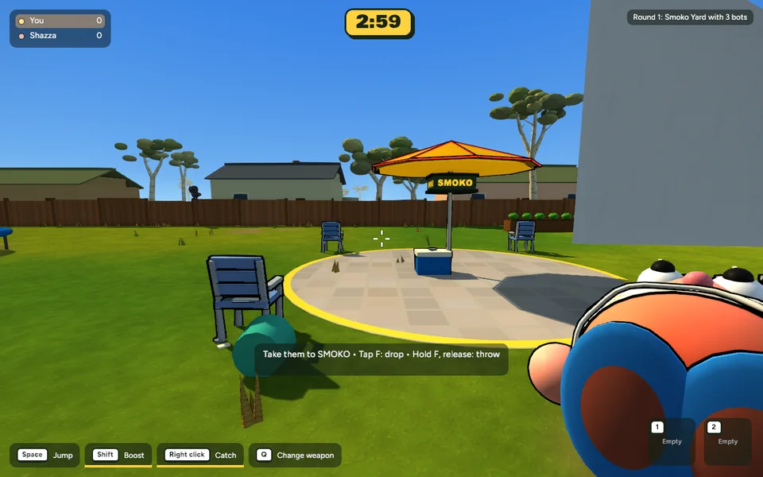

A separate selectable mode: knock someone down, pick them up and deliver them to the marked Smoko pad for 100 points. Backyard and Teddy Heist remain Smoko-free.
Solo → Maps / Game modes → Smoko → Play Smoko. The menu explains the objective and controls.

Actual running game capture, 1280 × 800. No concept images.
A central patio, yellow boundary, umbrella and four chairs form the delivery area. This mode reuses the backyard terrain and assets with its own layout and rules.

Press F near a downed or heavily stunned opponent to pick them up. Tap F again to drop; hold F for at least 0.25 seconds and release to throw. Carry them into the pad or land a throw there.
This repeatable capture starts with a downed opponent, then uses actual game inputs, movement and scoring. It is a controlled verification sequence, not a recording of a full human match.
607 tests passed; one existing test ignored. Release build passed. Checks cover delivery ownership, duplicate prevention, recovery, interruption, disconnection, round transitions, real bot movement, actual throw physics and host validation/network messages.
| Run | Mean frame time | Average FPS |
|---|---|---|
| Heist baseline · 11 bots | 8.732 ms | 114.52 |
| Heist after · same setup | 7.990 ms | 125.16 |
| Smoko · 11 bots | 8.081 ms | 123.75 |
No observed regression in the matched Heist run; asset counts are unchanged. Timing differences may be run-to-run noise. Smoko has different rules and scenery, so its result is a separate workload.
1280 × 800, 300-frame warmup, 600 samples, no vsync; wall-clock frame intervals, not GPU timestamps. Smoko P95: 9.228 ms; 1/600 frames exceeded 16.67 ms.Host-authoritative multiplayer logic is tested, but a live match between two people has not been playtested. Further playtesting should assess carrying feel, bot tactics and spawn fairness. The existing washing line can partly obscure the pad from some approaches, as visible in the capture. The map uses existing procedural props; it is not a newly modelled environment.
Checkpoint, rules and recovery instructions. Both Smoko milestones were approved for commit and push on 16 October 2026. Further milestones require user review.